10 correct + 10 wrong examples from the current best root model, held-out RWC split
What model is this?data/models/_eval_only_rwc_bp48_boundary_check.pt —
a flat MLP (48→128→128→12, LayerNorm+GELU+Dropout) trained on
a single BP48 chroma vector per (oracle-boundary) chord span: 4 concatenated
12-dim sub-blocks — onset ⊕ note ⊕ bass ⊕ treble —
extracted from Basic Pitch note/onset activations, root-position (not root-relative
rotated). There is no neighboring-chord / context-window input to this model:
every prediction below is made from that one 48-dim vector alone, nothing else. This
matches the confirmed-shipped baseline (context modeling was tried and found dead,
see docs/known_issues.md). Held-out root accuracy on this split: 63.0%.
Quality (7-way) predictions are shown for context but this tool is about the root error mode.
Bass-argmax root is a separate, established diagnostic (not a model output):
the pure argmax of just the 12-dim bass sub-block, used all session
to test whether the sounding bass note alone would predict the functional root
(docs/known_issues.md, "Bass-anchor diagnostic" — corpus-wide bass-argmax
root accuracy is 0.458, so it is informative but itself muddy). Shown separately from
the model's real prediction because they can disagree, and that disagreement is diagnostic
of whether the model is failing to use bass information it nominally has access to (it's
literally in the input vector) or whether the bass signal itself is too weak/ambiguous
even in isolation.
Confidence p= is the model's softmax probability for its own top prediction.
Chroma heatmap markers: ● green = ground-truth root,
× maroon = model-predicted root.
Wrong predictions (10) — diverse error types
WRONGRWC_P071 · 159.6s–161.4s
Ground truthBb:sus4(b7)
Model predicted rootF(p=0.60)
Model predicted qualitymin(p=0.91)
Bass-argmax rootA#(pure argmax of the bass 12-dim sub-block, not a model output)
P4/P5 confusionbass-argmax = GT (model missed an anchor the bass alone would have caught)
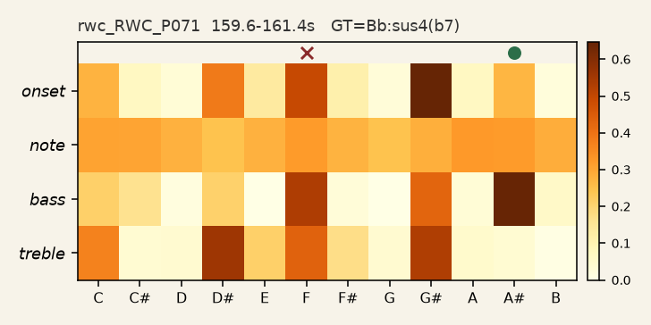
idx=9213 · held-out val split · rwc_RWC_P071
WRONGRWC_P054 · 19.4s–23.2s
Ground truthA:maj
Model predicted rootD(p=0.72)
Model predicted qualitymaj(p=0.99)
Bass-argmax rootD(pure argmax of the bass 12-dim sub-block, not a model output)
P4/P5 confusionbass-argmax = model prediction (bass and model agree, both wrong)
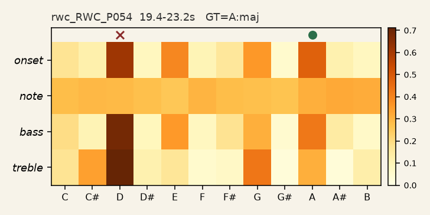
idx=6829 · held-out val split · rwc_RWC_P054
WRONGRWC_P091 · 30.1s–31.0s
Ground truthC:7
Model predicted rootF(p=0.67)
Model predicted qualitymaj(p=0.78)
Bass-argmax rootC(pure argmax of the bass 12-dim sub-block, not a model output)
P4/P5 confusionbass-argmax = GT (model missed an anchor the bass alone would have caught)
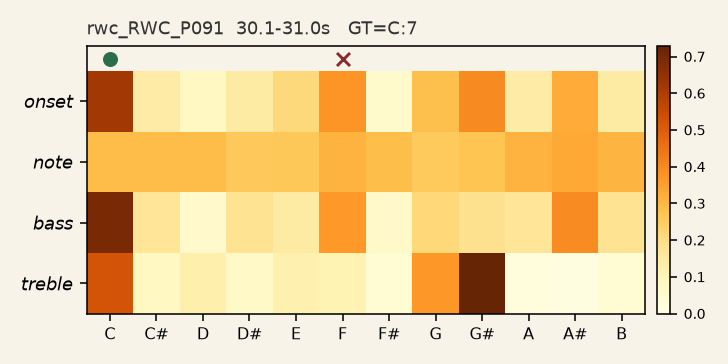
idx=11853 · held-out val split · rwc_RWC_P091
WRONGRWC_P031 · 208.5s–210.4s
Ground truthA:maj
Model predicted rootD(p=0.46)
Model predicted qualitymaj(p=0.90)
Bass-argmax rootD(pure argmax of the bass 12-dim sub-block, not a model output)
P4/P5 confusionbass-argmax = model prediction (bass and model agree, both wrong)
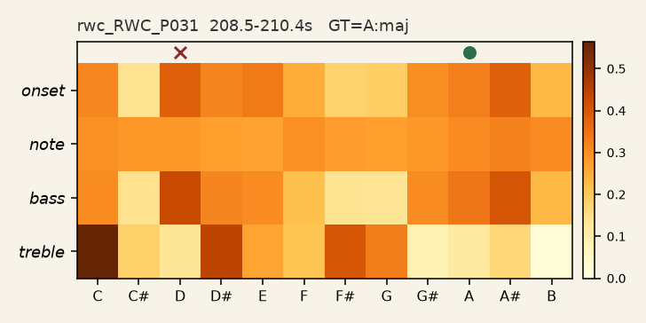
idx=3878 · held-out val split · rwc_RWC_P031
WRONGRWC_P045 · 135.6s–137.2s
Ground truthD:maj
Model predicted rootB(p=0.57)
Model predicted qualitymaj(p=0.95)
Bass-argmax rootD(pure argmax of the bass 12-dim sub-block, not a model output)
third confusionbass-argmax = GT (model missed an anchor the bass alone would have caught)
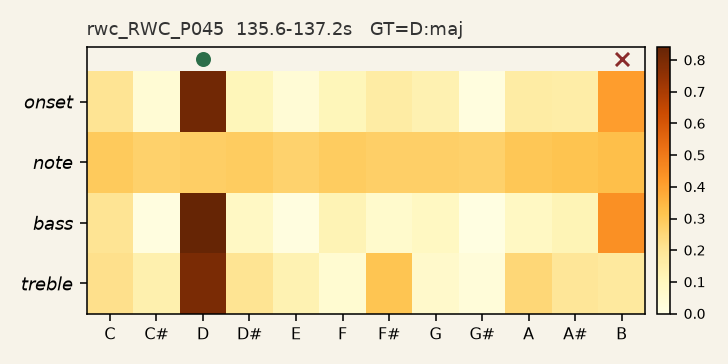
idx=5564 · held-out val split · rwc_RWC_P045
WRONGRWC_P034 · 140.6s–141.6s
Ground truthD:min7
Model predicted rootF(p=0.78)
Model predicted qualitymin(p=0.97)
Bass-argmax rootD#(pure argmax of the bass 12-dim sub-block, not a model output)
third confusionbass-argmax disagrees with both GT and prediction
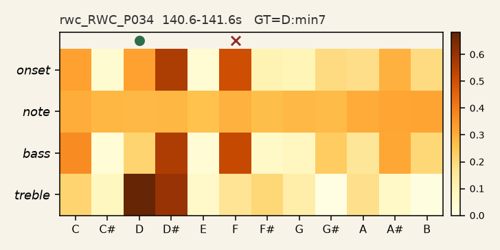
idx=4214 · held-out val split · rwc_RWC_P034
WRONGRWC_P071 · 211.1s–212.8s
Ground truthB:maj
Model predicted rootG#(p=0.78)
Model predicted qualitydim(p=0.78)
Bass-argmax rootB(pure argmax of the bass 12-dim sub-block, not a model output)
third confusionbass-argmax = GT (model missed an anchor the bass alone would have caught)
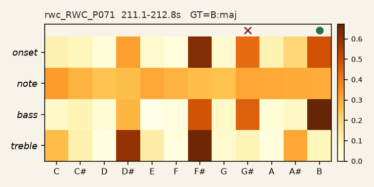
idx=9253 · held-out val split · rwc_RWC_P071
WRONGRWC_P074 · 67.7s–69.0s
Ground truthC:maj
Model predicted rootD(p=0.48)
Model predicted qualitymaj(p=0.99)
Bass-argmax rootC(pure argmax of the bass 12-dim sub-block, not a model output)
other confusionbass-argmax = GT (model missed an anchor the bass alone would have caught)
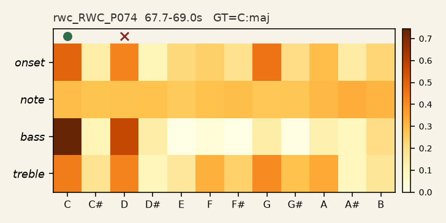
idx=9560 · held-out val split · rwc_RWC_P074
WRONGRWC_P071 · 145.9s–146.7s
Ground truthB:maj
Model predicted rootF(p=0.81)
Model predicted qualitymin(p=0.92)
Bass-argmax rootC(pure argmax of the bass 12-dim sub-block, not a model output)
other confusionbass-argmax disagrees with both GT and prediction
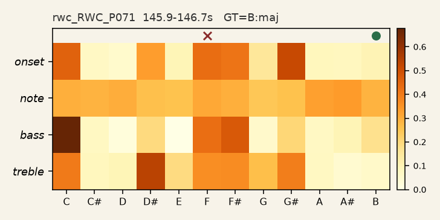
idx=9204 · held-out val split · rwc_RWC_P071
WRONGRWC_P013 · 50.0s–51.3s
Ground truthBb:maj
Model predicted rootG#(p=0.53)
Model predicted qualitymin(p=0.91)
Bass-argmax rootA#(pure argmax of the bass 12-dim sub-block, not a model output)
other confusionbass-argmax = GT (model missed an anchor the bass alone would have caught)
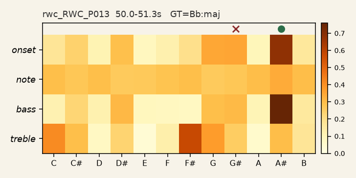
idx=1330 · held-out val split · rwc_RWC_P013
Correct predictions (10) — spread of confidence, not just easy cases
CORRECTRWC_P077 · 128.1s–129.1s
Ground truthG:min7
Model predicted rootG(p=0.93)
Model predicted qualitymaj(p=0.94)
Bass-argmax rootG(pure argmax of the bass 12-dim sub-block, not a model output)
bass-argmax = GT (bass alone would have been correct too)
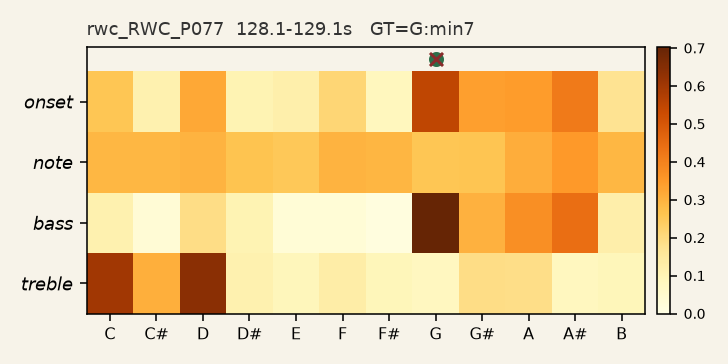
idx=9943 · held-out val split · rwc_RWC_P077
CORRECTRWC_P091 · 187.8s–189.7s
Ground truthF:min
Model predicted rootF(p=0.74)
Model predicted qualitymin(p=0.94)
Bass-argmax rootD#(pure argmax of the bass 12-dim sub-block, not a model output)
bass-argmax disagrees with GT (model got it right despite a muddy bass)
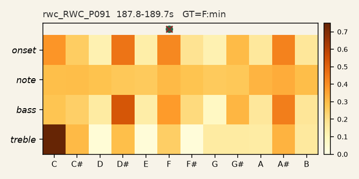
idx=11965 · held-out val split · rwc_RWC_P091
CORRECTRWC_P091 · 191.7s–193.6s
Ground truthEb:maj
Model predicted rootD#(p=0.45)
Model predicted qualitymin(p=0.90)
Bass-argmax rootA#(pure argmax of the bass 12-dim sub-block, not a model output)
bass-argmax disagrees with GT (model got it right despite a muddy bass)
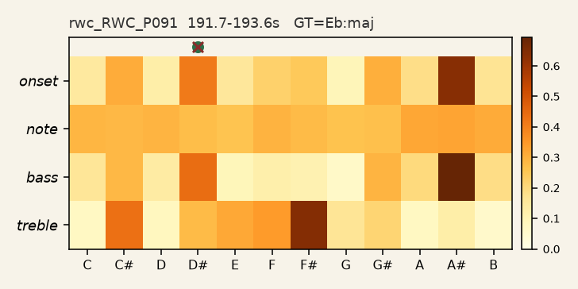
idx=11967 · held-out val split · rwc_RWC_P091
CORRECTRWC_P084 · 134.0s–135.6s
Ground truthA:maj
Model predicted rootA(p=0.84)
Model predicted qualitymaj(p=0.96)
Bass-argmax rootA(pure argmax of the bass 12-dim sub-block, not a model output)
bass-argmax = GT (bass alone would have been correct too)
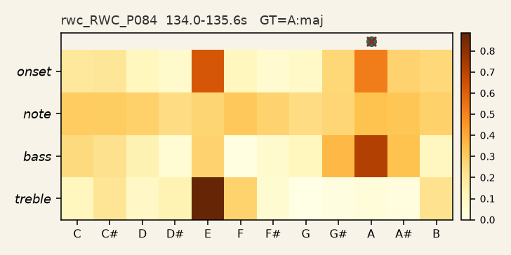
idx=10926 · held-out val split · rwc_RWC_P084
CORRECTRWC_P078 · 231.7s–233.7s
Ground truthE:min7
Model predicted rootE(p=0.88)
Model predicted qualitymaj(p=0.98)
Bass-argmax rootE(pure argmax of the bass 12-dim sub-block, not a model output)
bass-argmax = GT (bass alone would have been correct too)
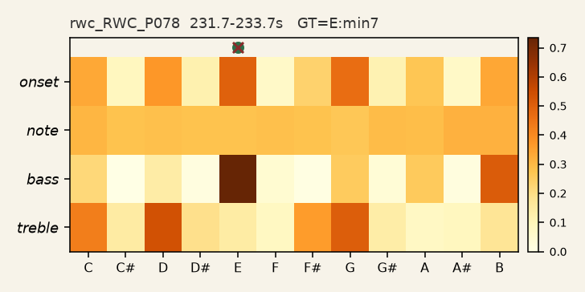
idx=10107 · held-out val split · rwc_RWC_P078
CORRECTRWC_P032 · 73.0s–74.7s
Ground truthD:maj
Model predicted rootD(p=0.90)
Model predicted qualitymaj(p=0.98)
Bass-argmax rootD(pure argmax of the bass 12-dim sub-block, not a model output)
bass-argmax = GT (bass alone would have been correct too)
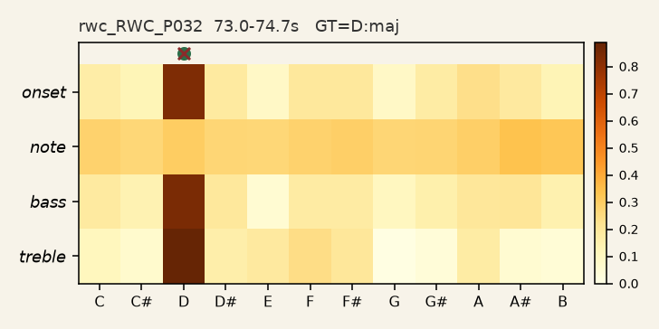
idx=3907 · held-out val split · rwc_RWC_P032
CORRECTRWC_P077 · 152.1s–154.1s
Ground truthC:maj
Model predicted rootC(p=0.96)
Model predicted qualitymaj(p=0.98)
Bass-argmax rootC(pure argmax of the bass 12-dim sub-block, not a model output)
bass-argmax = GT (bass alone would have been correct too)
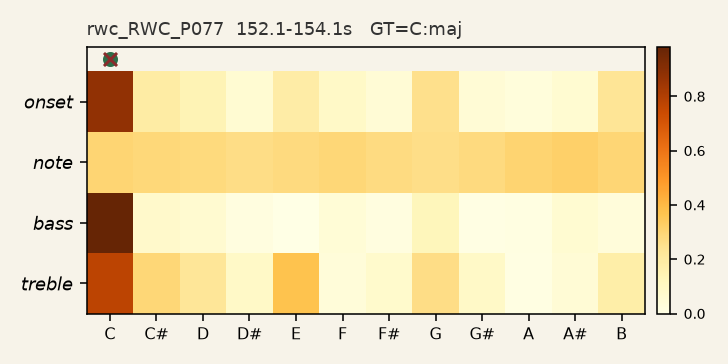
idx=9960 · held-out val split · rwc_RWC_P077
CORRECTRWC_P001 · 35.6s–36.5s
Ground truthE:maj
Model predicted rootE(p=0.67)
Model predicted qualitymaj(p=0.92)
Bass-argmax rootE(pure argmax of the bass 12-dim sub-block, not a model output)
bass-argmax = GT (bass alone would have been correct too)
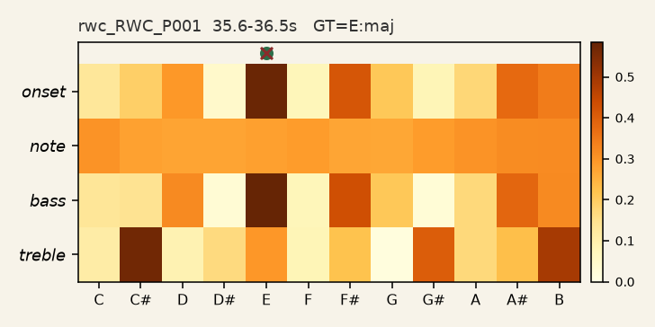
idx=21 · held-out val split · rwc_RWC_P001
CORRECTRWC_P046 · 168.0s–168.8s
Ground truthA:min
Model predicted rootA(p=0.57)
Model predicted qualitymaj(p=0.97)
Bass-argmax rootA(pure argmax of the bass 12-dim sub-block, not a model output)
bass-argmax = GT (bass alone would have been correct too)
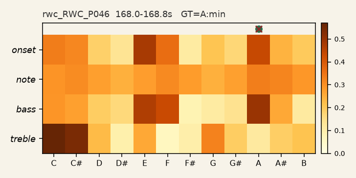
idx=5759 · held-out val split · rwc_RWC_P046
CORRECTRWC_P081 · 53.7s–54.4s
Ground truthD:maj
Model predicted rootD(p=0.80)
Model predicted qualitymaj(p=0.50)
Bass-argmax rootD(pure argmax of the bass 12-dim sub-block, not a model output)
bass-argmax = GT (bass alone would have been correct too)